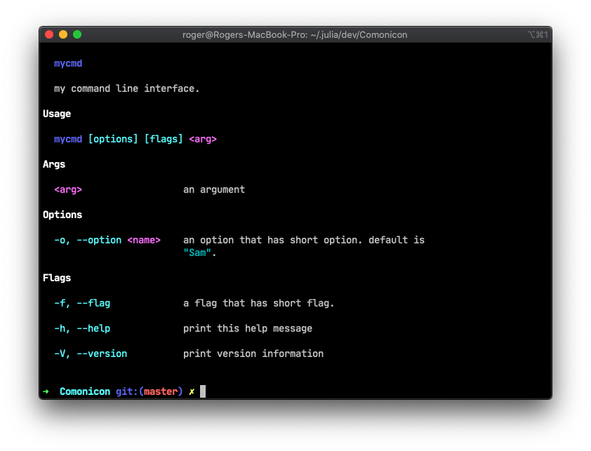

Comonicon
gith averminaluk ayh juldas mausan urdan


Roger's magic book for command line interfaces.
Comonicon — ModuleAll the terminals are under my command. Comonicon is a CLI (Command Line Interface) generator that features light-weight dependency (optional to have zero dependency), fast start-up time and easy to use. See the website for more info.
Quick Start
The simplest and most common way to use Comonicon is to use @cast and @main.
Comonicon.@main — Macro@main
@main <function definition>Main entry of the CLI application.
Quick Example
# in a script or module
"""
sum two numbers.
# Args
- `x`: first number
- `y`: second number
# Options
- `-p, --precision=<type>`: precision of the calculation.
# Flags
- `-f, --fastmath`: enable fastmath.
"""
@main function sum(x, y; precision::String="float32", fastmath::Bool=false)
# implementation
return
endCLI Definitions and Julia Syntax Mapping
positional arguments normal inputs, these are mapped as Julia function arguments, e.g
sum 1 2sum is the command, and 1, 2 are positional arguments.
options arguments with syntax --<name>=<value> or --<name> <value>, these are mapped as Julia keyword arguments, e.g
sum --precision=float32 1 2--precision is the option of command sum and has value float32.
short options arguments with syntax -<letter>=<value> or -<letter><value> or --<letter> <value>, the letter is usually the first character of a normal option, e.g
sum -pfloat32 1 2-p is the same as --precision, but in short hand, this is enabled by writing corresponding docstring (see the next section on docstring syntax).
flags like options, but without any value, e.g --<name>, this is mapped to a special type of keyword argument that is of type Bool and has default value false, e.g
sum --fastmathshort flags flags with syntax -<letter>, the letter should be the first character of the corresponding normal flag, e.g
sum -fDoc String Syntax
Each different kind of inputs must have a different level-1 section (markdown syntax #<section name>).
The docstring must have section name:
#Argsor#Argumentsto declare the documentation of positional arguments.#Optionsto declare the documentation of options.#Flagsto declare the documentation of flags.
Examples
The simplest usage is creating the following commands
"""
an example command
# Args
- `x`: first argument
- `y`: second argument
- `z`: last argument
# Flags
- `-f, --flag`: a flag, optionally can be a short flag.
# Options
- `-o, --option=<int>`: an option, optionally can be short option.
"""
@cast function mycommand(x, y, z; flag::Bool=false, option::Int=2)
# some implementation
return
end
@cast function myothercommand(xs...)
# another command with variatic arguments
return
end
"""
My main command.
"""
@main # declare the entrythis can be used in command line as mycommand 1 2 3 --flag, you can also just type -h to check the detailed help info.
The command line documentation will be generated automatically from your Julia docstring.
If you have deeper hierachy of commands, you can also put @cast on a Julia module.
@cast module NodeCommand
using Comonicon
@cast foo(x) = nothing
endLet's use a simple example to show how, the following example creates a command using @main.
using Comonicon
@main function mycmd(arg; option="Sam", flag::Bool=false)
@show arg
@show option
@show flag
endif you write this into a script file myscript.jl and execute it using
julia myscript.jl -hYou will see the following in your terminal.

If you want to add some description to your command, you can just write it as a Julia function doc string, e.g
using Comonicon
"""
my first Comonicon CLI.
"""
@main function mycmd(arg; option="Sam", flag::Bool=false)
@show arg
@show option
@show flag
end
but you might also want to have more detailed help message for your CLI arguments and options, you can specify them via doc string:
"""
my command line interface.
# Arguments
- `arg`: an argument
# Options
- `-o, --option`: an option that has short option.
# Flags
- `-f, --flag`: a flag that has short flag.
"""
@main function mycmd(arg; option="Sam", flag::Bool=false)
@show arg
@show option
@show flag
endThis will give a help message looks like below after execute this in myscript.jl via julia myscript.jl

Now, you can directly use this script from command line in this way. But if you want to make it accessible in shell, should do the following:
- create a file without any extension called
mycmd - copy the script above
- add the following line on the top of your script
mycmd(this is called shebang):
#!<path to your julia executable>now your mycmd script should look like the following
#!<path to your julia executable>
using Comonicon
"""
my first Comonicon CLI.
"""
@main function mycmd(arg; option="Sam", flag::Bool=false)
@show arg
@show option
@show flag
end- now we need to give this file permission via
chmod:
chmod +x mycmd- you can now execute this file directly via
./mycmd, if you want to be able to execute this cmd directly from anywhere in your terminal, you can move this file to.julia/binfolder, then add.julia/binto yourPATH
export PATH="$HOME/.julia/bin:$PATH"What's under the hood?
Now let me explain what @main does here. In short it does the following things:
- parse your expression and create a command line object
- use this command line object to create an entry (See Conventions section to read about its convention)
- generate a Julia script to actually execute the command
- cache the generated Julia script into a file so it won't need to recompile your code again
Developer Recommendations
For simple and small cases, a CLI script is sufficient.
However, for larger projects and more serious usage, one should create a Comonicon CLI project to use the full power of Comonicon. You will be able to gain the following features for free in a Comonicon project:
- much faster startup time
- automatic CLI installation
- much easier to deliver it to more users:
- can be registered and installed as a Julia package
- distributable system image build in CI (powered by PackageCompiler)
- distributable standalone application build in CI (powered by PackageCompiler)